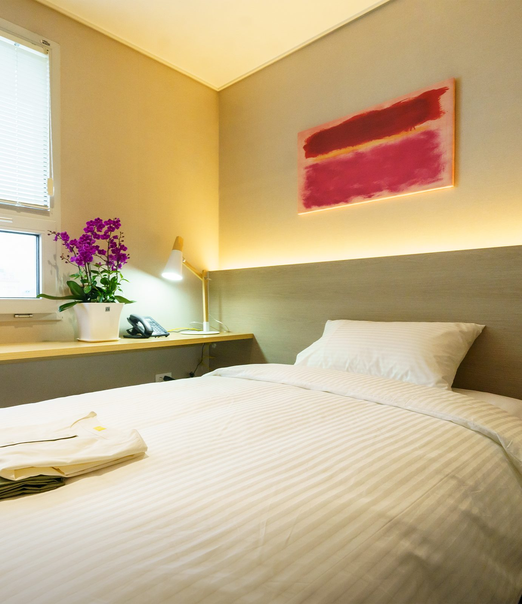

신장암·방광암 수술 후 회복 안내
암 치료 자체는 현재 진료중인 대학병원에서 이어지고, 그 사이의 회복은 하일렌요양병원이 입원과 외래로 관리합니다. 수술 직후에는 통증·상처·합병증을 세심하게 관리합니다. 수술 부위 관리는 수술한 병원의 지침을 그대로 지켜 간호팀 및 주사·상처관리팀이 이어서 살핍니다.
신장암·방광암 수술을 받은 분과 보호자가 회복 입원을 상담하기 전에 확인하는 페이지입니다. [디렉터 확인] 이 페이지에 신우암·요관암을 함께 묶을지 정해 주세요. 공식 블로그의 신우암 글 3편과 요관암 글 1편을 이 페이지의 환자 질문 근거로 함께 읽었습니다. 묶기로 하면 이 문장 뒤에 「신우암·요관암 수술 후 회복도 이 페이지에서 함께 안내합니다.」를 넣고, 페이지 이름에도 밝힐지 함께 정합니다.
[디렉터 확인] 첫 문단에 넣을 신장암·방광암 고유 문장을 정해 주세요. 2025 홈페이지에 이 암종의 페이지가 없어 재사용할 원문이 없습니다. 지금 첫 문단은 암종 공통 확정 문장 세 개입니다. 아래 「남은 신장」 절과 「인공방광과 소변 관리」 절의 원내 운영 문장이 확정되면 첫 문단에 올립니다.

- 대상
- 신장암·방광암 수술 후 회복이 필요한 분
- 이용 방법
- 입원 · 단기입원(1박 2일부터) · 외래
- 입원 서류
- 소견서 또는 진료기록지 중 하나, 신분증, 피검사 결과지
- 야간
- 의료진 24시간 상주 · 당직 체계로 확인·처방
- 문의
- 원내 상담실 · 카카오톡 채널 · 062-439-1000
남은 신장
"한쪽 신장을 제거했는데 괜찮을까요? 남은 신장은 어떻게 지키나요?"
한쪽 신장으로 지내도 괜찮은지에 대한 판단과 신장 기능 검사 일정은 치료병원에서 정합니다. 복용 약의 조정도 치료병원에서 정합니다.
수술 직후에는 통증·상처·합병증을 세심하게 관리합니다. 수술 부위 관리는 수술한 병원의 지침을 그대로 지켜 간호팀 및 주사·상처관리팀이 이어서 살핍니다.
운동 범위는 주치의가 환자 상태를 보고 환자와 상담을 통해 결정합니다. 암재활 그룹 운동치료에는 걷기 운동 프로그램이 따로 없습니다. 암재활 그룹 운동치료 안내는 치료센터 안내에 있습니다.
[디렉터 확인] 신장 기능 수치를 원내 혈액검사로 볼 수 있는지 검사실에 확인해 주세요. 원내 검사의 확정 표기는 「혈액검사 및 흉부 엑스레이 촬영」까지이고 검사 항목은 적혀 있지 않습니다. 근거 후보는 암정보 위키 「전립선암·방광암·신장암」 환자 체크리스트의 신장 기능 항목과 공식 블로그 224342629942, 224348472582의 원내 서술입니다. 두 글의 문장은 확정 표기가 아니어서 옮기지 않았습니다. 확정되면 「신장 기능 수치는 원내 혈액검사로 확인하고, 당일 결과를 주치의가 확인합니다.」 한 문장을 이 자리에 넣습니다.
[디렉터 확인] 입원 중 혈압·혈당·체중·소변량을 누가 어떻게 확인하는지 정해 주세요. 근거 후보는 위키 환자 체크리스트(혈압·혈당·체중·배뇨)와 공식 블로그 224348479103, 224348472582, 224342629942의 원내 서술입니다. 세 글에는 확인 빈도 표현과 판단 수치가 있어 문장을 옮기지 않았습니다.
[디렉터 확인] 복용 중인 약과 건강식품을 원내에서 확인해 주는지 정해 주세요. 근거 후보는 공식 블로그 224348472582의 원내 서술과 입원 안내 페이지의 지참약 확인 자리(오더액팅 콘텐츠자산 §3)입니다. 지참약 문장이 확정되면 입원 안내와 같은 문장을 이 자리에 넣습니다.
식사와 물
"신장암 수술 후 엄격한 신장식을 해야 하나요? 물은 많이 마셔도 되나요?"
신장식처럼 식사를 제한해야 하는지와 하루에 마실 물의 양은 치료병원에서 정합니다. 입원 첫날부터 식사 이야기를 나눕니다.
입원 중 식사 안내는 입원 안내에, 영양·식사 과제는 회복 과제별 안내에 있습니다.
[디렉터 확인] 저염식과 칼륨 조절 식사를 제공하는지 영양실에 확인해 주세요. 확정 치료식 목록은 항암식·위절제식·저잔사식·저요오드식이고 저염식은 없습니다. 근거 후보는 공식 블로그 224342629942, 224348472582, 224348479103의 원내 서술(저염 기준을 반영한 치료식을 제공한다는 문장)입니다. 세 글의 문장은 확정 표기가 아니어서 옮기지 않았습니다. 확정 치료식 문장(「환자 상태에 맞춘 치료식을 제공합니다」)은 이 절에 두지 않았습니다. 신장식을 묻는 자리 바로 아래에 두면 신장식이나 저염식을 제공한다는 뜻으로 읽힐 수 있기 때문입니다. 확정되면 제공 방식을 한 문장으로 이 자리에 넣습니다.
[디렉터 확인] 치료병원에서 들은 식사 지침과 수분 제한을 입원할 때 누구에게 알리면 되는지 정해 주세요. 확정 문장은 「입원 첫날부터 식사 이야기를 나눕니다」까지입니다. 확정되면 「치료병원에서 들으신 식사 지침은 입원 첫날 알려 주세요.」 꼴로 한 문장을 넣습니다.
인공방광과 소변 관리
"인공방광 수술 후 소변 관리가 달라졌는데 집에서 혼자 할 수 있을까요?"
인공방광의 소변 관리 방법은 수술한 병원에서 받은 교육과 지침을 따릅니다. 혼자 관리할 수 있게 되기까지 걸리는 기간은 숫자로 말씀드리지 않습니다.
장기간 간병이 필요하시면 일반 요양병원을 안내해 드립니다. 간병 안내는 입원 안내에 있습니다.
[디렉터 확인] 인공방광이나 요루를 가진 분의 소변 관리를 원내에서 어디까지 돕는지 간호팀에 확인해 주세요. 확인할 것은 세 가지입니다. 첫째는 소변 관리와 자가 도뇨를 원내에서 지도하는지입니다. 둘째는 요루 주머니 교체를 누가 하는지입니다. 셋째는 스스로 관리하기 어려운 분이 입원할 수 있는지입니다. 근거 후보는 공식 블로그 224239551338의 원내 서술(소변 상태와 인공방광 관리 상태를 살핀다는 문장)입니다. 그 글에는 확인 빈도 표현과 효과로 읽히는 표현이 있어 문장을 옮기지 않았습니다. 확정 표기의 관리 대상은 상처·배액관·케모포트까지입니다. 그래서 수술 부위 관리 문장은 인공방광이나 요루 관리로 읽히지 않게 이 절에 두지 않고, 첫 문단과 「남은 신장」 절에만 두었습니다.
[디렉터 확인] 소변줄(도뇨관)을 가진 채 입원할 수 있는지와 입원 중 관리 주체를 확인해 주세요. 근거 후보는 공식 블로그 224348467466의 서술(수술 직후 소변줄과 배액관이 남아 있을 수 있다는 문장)입니다. 전립선암 페이지의 같은 확인 자리와 한 문장으로 맞춥니다. 소변줄이 포함되면 「소변줄은 수술한 병원의 지침을 그대로 지켜 간호팀 및 주사·상처관리팀이 살핍니다.」 꼴로 적습니다.
[디렉터 확인] 「인공방광」「요루」「자가 도뇨」 첫 등장 괄호 풀이 문장(D2 4-1 H-31)을 검토 의료진이 확정해 주세요. 확정 전에는 화면 문장에 「인공방광」만 쓰고 풀이를 넣지 않습니다.
방광이 예민할 때와 소변에 피가 비칠 때
"방광 안에 약을 넣는 치료 뒤 방광이 예민한데 괜찮을까요? 소변에 피가 비치면 어떻게 하나요?"
방광 안에 약을 넣는 치료의 시행 여부와 횟수, 간격은 치료병원에서 정합니다. 괜찮은 변화인지는 치료병원 진료에서 판단합니다.
소변에 피가 비치면 참지 마시고 말씀해 주세요. 원인을 가리는 검사와 판단은 치료병원에서 합니다.
의료진이 24시간 상주하고 당직 체계로 확인·처방합니다. 하일렌요양병원에는 자체 응급실이 없습니다. 응급 상황은 발견, 초기 안정화, 상급 치료병원으로 신속 전원의 순서로 대응합니다. 야간·응급 대응은 입원 안내에서 안내합니다.
증상이 나아지지 않거나 나빠질 수도 있습니다. 그런 경우 치료병원 진료가 필요하다고 판단되면 안내해 드립니다.
[디렉터 확인] 입원 중 소변에 피가 비칠 때 원내에서 누가 확인하고 어떤 순서로 치료병원에 알리는지 확인해 주세요. 근거 후보는 위키 환자 체크리스트의 「혈뇨」와 공식 블로그 224392106477의 문답(소변에 피가 비치면 치료받는 병원에 알리라는 문장)입니다. 원내 대응을 적은 확정 문장이 없어 야간 공통 문장만 두었습니다. 증상 기준은 이 페이지에 쓰지 않습니다.
[디렉터 확인] 방광 안에 약을 넣는 치료 뒤의 배뇨 불편을 원내에서 누가 살피는지 확인해 주세요. 근거 후보는 공식 블로그 224392106477의 원내 서술(배뇨와 수분 상태를 살핀다는 문장)과 위키 환자 체크리스트의 「배뇨」입니다. 확정되면 「배뇨 변화는 원내 의료진이 진료에서 확인합니다.」 한 문장을 넣고, 전립선암 페이지의 같은 자리와 맞춥니다.
회복 입원과 외래
"신장암·방광암도 요양병원에서 회복해도 되나요?"
암 치료 자체는 현재 진료중인 대학병원에서 이어지고, 그 사이의 회복은 하일렌요양병원이 입원과 외래로 관리합니다. 입원 상담과 입원 예약은 원내 상담실에서 안내합니다.
하일렌요양병원의 단기입원은 1박 2일부터 치료 일정에 맞춰 이용할 수 있습니다. 입원 서류는 소견서 또는 진료기록지 중 하나, 신분증, 피검사 결과지입니다. 병실과 식사 안내는 입원 안내에 있습니다.
원내에서는 혈액검사 및 흉부 엑스레이 촬영을 하고, 당일 결과를 주치의가 확인합니다. 추적검사 주기는 치료병원이 정합니다. 입원 중 다른 병원 외래 진료에 필요한 진료의뢰서는 원내 주치의가 작성합니다.
항암·방사선 치료 중에는 발열·오심·피로 등 부작용 증상을 관리합니다. 항암 주기 사이에는 단기입원을 1박 2일부터 치료 일정에 맞춰 이용할 수 있습니다.
입원이 끝나도 회복은 끝나지 않습니다. 외래로 이어지는 회복 흐름을 하일렌요양병원이 함께 관리합니다. 몸이 힘든 날에는 외래나 1박 2일부터 가능한 단기입원으로 언제든 다시 관리받으실 수 있습니다.
외래로는 고주파온열암치료, 고압산소치료, 도수치료, 림프 관리, 고용량 비타민C, 면역 주사제, 영양공급수액을 받을 수 있습니다.
외래 이용은 단기입원·외래 안내에, 퇴원 뒤 관리는 회복 과제별 안내에, 그 밖의 질문은 자주 묻는 질문에 있습니다. 다른 암종의 안내는 암종별 회복 안내에 있습니다.
[디렉터 확인] 요관암·방광암의 항암 시기와 신장암의 표적항암·면역항암 시기를 이 페이지에서 얼마나 다룰지 정해 주세요. 지금은 암종 공통 확정 문장 두 개만 두었습니다. 근거 후보는 공식 블로그 224393369667과 224270186527입니다. 위키 표현 주의에 따라 뼈 전이 치료 근거는 다른 암종과 섞지 않으며, 이 페이지에서는 다루지 않았습니다.
자주 묻는 질문
신장암·방광암도 요양병원에서 회복해도 되나요?
암 치료 자체는 현재 진료중인 대학병원에서 이어지고, 그 사이의 회복은 하일렌요양병원이 입원과 외래로 관리합니다. 하일렌요양병원의 단기입원은 1박 2일부터 치료 일정에 맞춰 이용할 수 있습니다.
[디렉터 확인] 남은 신장, 식사와 물, 인공방광, 소변에 피가 비칠 때의 문답은 확정 문장이 없어 자주 묻는 질문과 구조화 데이터에 넣지 않았습니다. 위 절의 확인 자리가 채워지면 같은 문장으로 문답을 더합니다.
입원·외래·단기입원 상담은 원내 상담실에서 안내합니다. [디렉터 확인] 응대 가능 시간과 부재중일 때 재연락 방식. 채널 표기값은 첫 화면 상담 블록에 적었습니다(D2 9-1 신설 행)
제공 하일렌요양병원 · 검토 [디렉터 확인] 검토 의료진 · 검토일 [디렉터 확인] · 출처 하일렌 발행정본 확정 표기(2026-08-20 병원 검수, 2026-09-20 추가분) B-6·B-7-1·B-10·B-24·B-31·B-32, 첫 화면 정체성 문장, 2026 홈페이지 초안의 확정 문장(입원 안내, 단기입원·외래 안내, 회복 과제별 안내, 유방암·갑상선암 페이지), 암정보 위키 03 암종별 「전립선암·방광암·신장암」(표현 주의와 환자 체크리스트 확인용), 암종별 이슈보드 「기타암종 이슈보드」(방광·신장 항목은 수집 전), 하일렌 공식 블로그 신장암·방광암·신우암·요관암 글 8편(환자 질문 확인용). 「치료병원에서 정합니다」 꼴의 문장과 「기간은 숫자로 말씀드리지 않습니다」는 회복 과제별 페이지와 갑상선암 페이지의 문장 꼴을 따른 기반 작성입니다. · 갱신 2026-10-13 · [디렉터 확인] 새로 더한 쪽입니다. 2025 홈페이지에 없던 내용이라 병원장님 승인이 필요합니다 · [디렉터 확인] title·description 문안 · [디렉터 확인] 신장암과 방광암을 한 페이지로 묶을지 정해 주세요. 공식 블로그 글은 신장암 5편, 방광암 3편, 신우암 3편, 요관암 1편입니다 · [디렉터 확인] 게시 주소를 정해 주세요. 새 페이지라 2025 홈페이지 주소가 없어 canonical을 /inc/custom/amjong-sinjangam.html 로 적었습니다 · [디렉터 확인] 근거 블록 채택과 출처 표기 방식(D2 #11)